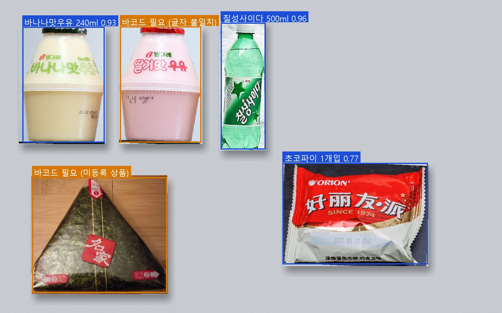
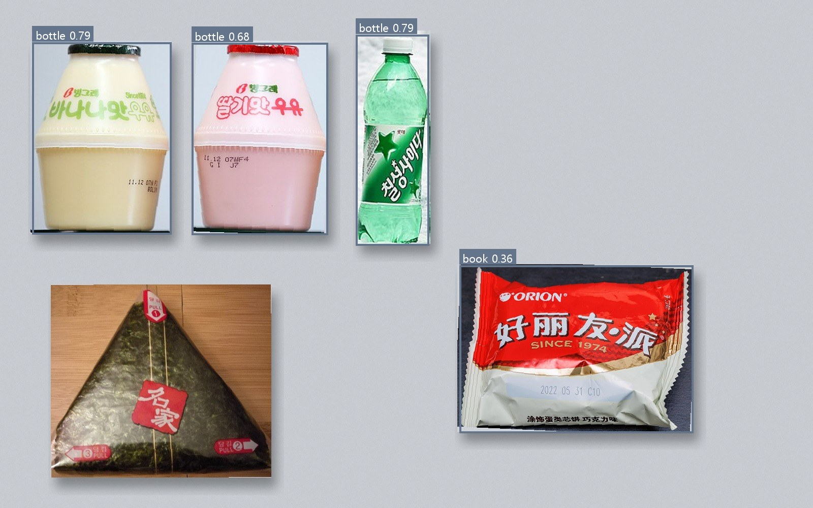
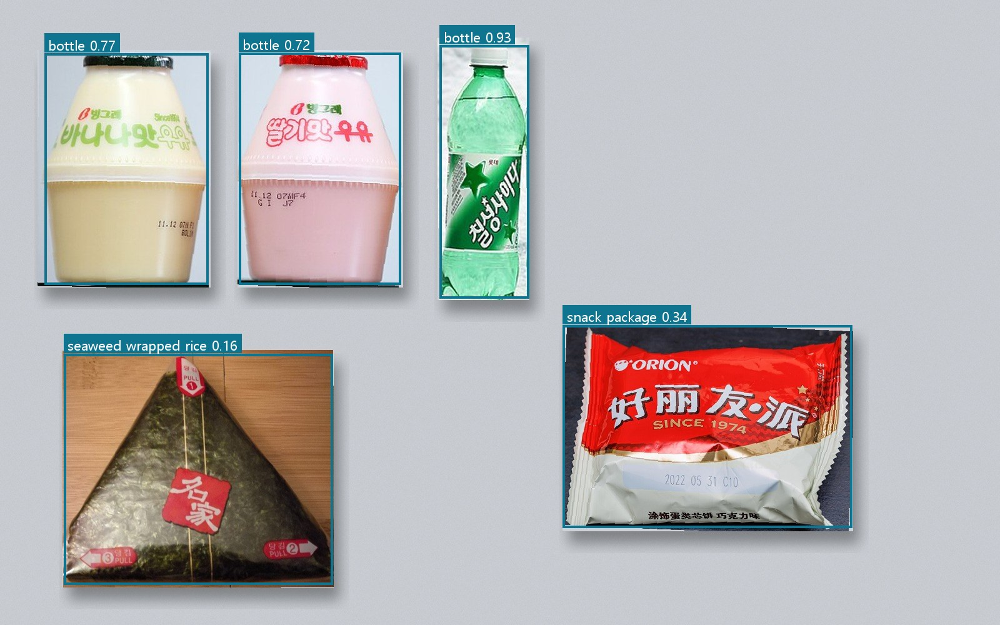
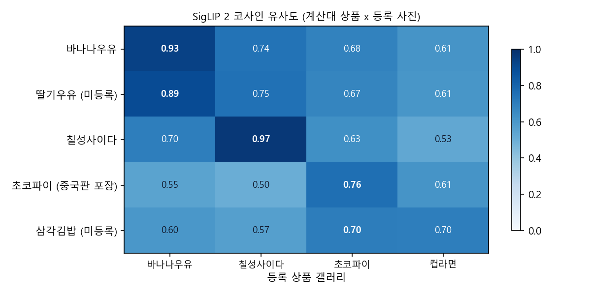
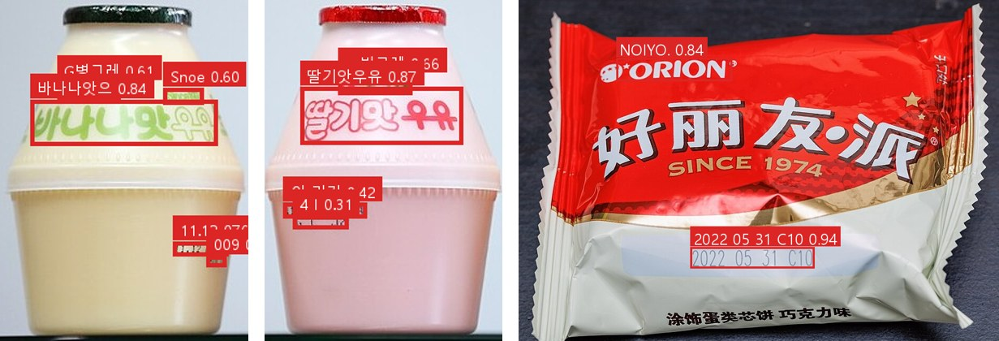
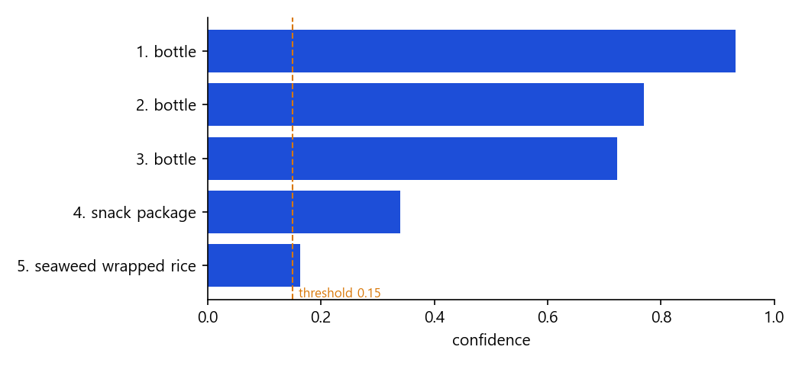
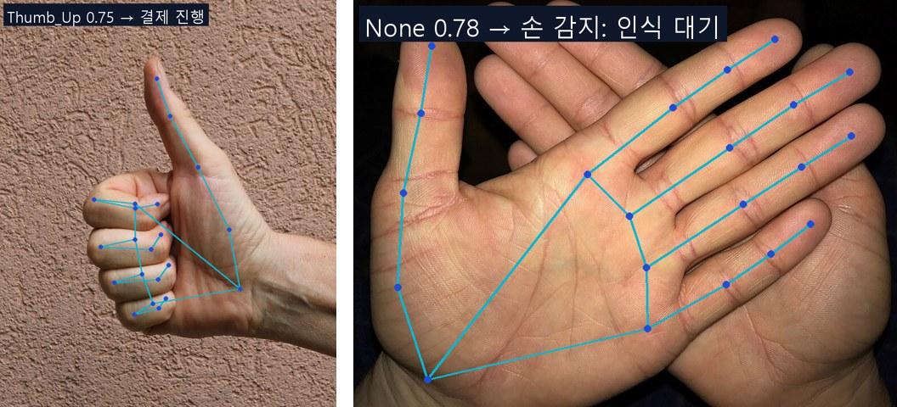

바코드 찾지 마세요.
올려놓으면 1초.
스캔앤고는 계산대에 물건을 올려놓기만 하면 카메라가 상품을 한 번에 알아보고 금액을 계산하는 편의점 무인계산대입니다. 인터넷이 끊겨도 멈추지 않습니다.
무인계산대인데, 왜 줄은 그대로일까요?
지금의 무인계산대는 손님이 상품마다 바코드를 찾아서 하나씩 찍어야 합니다. 물건이 여러 개면 시간이 걸리고, 바코드 위치를 못 찾아 헤매는 일도 많습니다. 스캔앤고는 올려놓는 것만으로 계산을 끝내서 줄 서는 시간을 없앱니다.
지금바코드 무인계산대
- 상품 하나를 집는다
- 바코드 위치를 찾아 돌려 본다
- 스캐너에 맞춰 찍는다 × 상품 수
- 안 찍히면 다시 찍는다
- 합계 확인 후 결제
스캔앤고올려놓는 계산대
- 장바구니 물건을 한꺼번에 올린다
- 카메라가 모든 상품을 동시에 인식 ≤ 1s
- 목록과 합계 확인 후 결제
올려놓으면 바로 금액이 떠야 한다
빨리 계산하고 나갈 수 있어야 합니다.
인터넷이 끊겨도 계산이 멈추면 안 된다
따로 관리할 일도 적어야 합니다.
매주 신상품을 전국에 쉽게 반영
3,000개 매장에 새 모델을 한 번에 내려보내야 합니다.
보고, 알아보고, 계산합니다
모든 인식은 매장에 설치한 AI 박스 안에서 끝납니다. 클라우드는 신상품 사진을 등록하고, 상품 갤러리와 모델을 매장으로 내려보내는 데만 씁니다.
-
CAMERA
감지
계산대 위 카메라가 트레이에 올린 상품들을 한 장면으로 촬영합니다. 손이 트레이 위에 있으면 아직 올리는 중으로 보고 기다립니다 (MediaPipe).
-
EDGE AI BOX · YOLOE + SIGLIP 2 + OCR
판단
YOLOE가 상품의 위치를 찾고, SigLIP 2가 등록 사진과 비교해 2,000종 중 무엇인지 판별합니다. 헷갈리면 포장지 글자(OCR)로 확인합니다. 영상은 매장 밖으로 나가지 않습니다.
-
DISPLAY · POS
행동
인식한 상품 목록과 합계 금액을 화면에 띄우고 기존 결제 시스템으로 넘깁니다. 인식이 안 되면 바코드 스캔으로 이어집니다.
모델 4개를 이어 붙여, 재학습 없이 신상품을 알아봅니다
제로샷 비전 모델을 검토한 결과 A안(신규 모델 적용)으로 결정했습니다. 상품 2,000종을 하나의 분류 모델로 매주 다시 학습하는 대신, YOLOE가 상품의 위치를 찾고 SigLIP 2가 등록 사진과 비교해 무슨 상품인지 판별합니다. 신상품은 사진 몇 장만 등록하면 됩니다.
- 01 · MEDIAPIPE
손 확인
트레이 위에 손이 있으면 아직 올리는 중이므로 인식을 미룹니다. 엄지척은 결제 진행 신호로 씁니다.
65ms - 02 · YOLOE
상품 위치
"bottle", "snack package" 같은 말로 상품처럼 생긴 것을 찾습니다. 라벨 데이터 0장.
102ms - 03 · SIGLIP 2
상품 판별
잘라낸 상품을 등록 사진 갤러리와 비교해 유사도가 가장 높은 상품을 고릅니다.
584ms - 04 · OCR
글자 확인
유사도가 애매할 때만 포장지 글자를 읽어 확인합니다. 바나나우유와 딸기우유처럼 용기가 같은 상품을 가려냅니다.
1,845ms - 05 · RESULT
영수증 · 바코드
확정된 상품은 합계에 넣고, 미등록이거나 글자가 맞지 않는 상품은 바코드 스캔을 요청합니다.
2.6s
시간은 개발 PC CPU에서 상품 5개 한 장을 처리한 실측값입니다. 목표 1초는 매장 AI 박스(GPU)에서 PoC 때 확인합니다.

src/scan_and_go.py — 파란색은 인식 확정, 주황색은 바코드 요청실행 영수증
CPU · 2,596 ms- 바나나맛우유 240ml1,700원
- 칠성사이다 500ml2,000원
- 초코파이 1개입600원
- 딸기우유 (미등록)–
- 삼각김밥 (미등록)–
5개 중 5개를 올바르게 처리했습니다. 틀린 금액 대신 바코드 요청으로 넘긴 것이 핵심입니다.
단계별로 보면

bottle로만 알고, 초코파이는 book 0.36, 삼각김밥은 놓쳤습니다.
seaweed wrapped rice 0.16으로 약해서 기준을 0.15로 낮췄습니다.



Thumb_Up 0.75는 결제 진행, 제스처가 없는 손은 "아직 올리는 중"으로 보고 인식을 미룹니다.검토한 모델과 결정
| 모델 | 스캔앤고에서 맡는 일 | 결정 | 이유 |
|---|---|---|---|
| YOLO26 | (기존) 상품 2,000종 분류 검출 | 역할 축소 | 상품이 COCO 밖이라 커스텀 학습 필수, 매주 재학습·250MB 배포 부담. 장기적으로 '상품' 1클래스 검출기로 다시 쓸 수 있음 |
| YOLOE | 상품 위치 찾기 | 적용 | 라벨 0장으로 5개 모두 검출. 한국 특화 상품(김밥)은 약함 |
| SigLIP 2 | 등록 사진과 비교해 상품 판별 | 적용 | 신상품 = 사진 등록. 매주 배포량이 모델 250MB → 임베딩 약 0.4MB |
| OCR | 포장지 글자로 교차 확인 | 적용 | 용기가 같은 상품의 오인식을 바코드 요청으로 돌림 |
| MediaPipe | 손 감지 · 제스처 결제 확인 | 적용 | 온디바이스, CPU로도 65ms |
| DINO-X | — | 미적용 | 클라우드 API라 오프라인·영상 외부 전송 금지 조건과 충돌. 본사 상품 사진 자동 라벨링에는 활용 가능 |
| SAM 3 | — | 미적용 | 계산에는 박스로 충분, 픽셀 마스크 불필요. GPU 부담이 큼 |
아직 남은 과제도 그대로 적었습니다. 판정 기준은 공개 사진 5개로 정한 값이라 PoC 매장 사진으로 다시 맞춰야 합니다. CPU에서는 2.6초로 목표(1초)보다 느리고, YOLOE는 AGPL-3.0이라 상용 배포 전에 라이선스를 해결해야 합니다. 실습 사진은 Wikimedia Commons 자유 라이선스 사진을 합성했습니다 (출처).
계산대에 직접 올려 보세요
버튼을 누르면 상품 5개가 트레이에 올라가고, AI 박스가 한 번에 인식합니다. 인터넷을 끊거나 아직 등록되지 않은 신상품을 올려 보세요.
상품을 올려 주세요
※ 데모용 시뮬레이션입니다. 상품 가격과 인식 시간은 예시 값이며, 목표는 상품 5개 기준 1초 이내입니다.
계산 화면
READY- 트레이가 비어 있습니다
주요 기능
- 2,000 SKU
상품 인식
계산대에 올린 상품 여러 개를 카메라로 한 번에 인식합니다. 대상은 상품 2,000종입니다.
- ≤ 1s
금액 표시
인식한 상품 목록과 합계 금액을 바로 화면에 보여 줍니다.
- OFFLINE
오프라인 동작
인터넷 연결 없이도 인식과 금액 계산이 됩니다. 회선 장애가 매출 손실로 이어지지 않습니다.
- NO RETRAINING
신상품 업데이트
신상품은 사진 몇 장만 등록하면 됩니다. 모델을 다시 학습하지 않고, 등록 사진의 임베딩(주 50종 약 0.4MB)만 손님이 적은 밤에 내려받습니다.
- FALLBACK
바코드 스캔 병행
아직 등록되지 않은 상품이나 장비 고장에 대비해 기존 바코드 스캔도 그대로 쓸 수 있습니다.
왜 클라우드가 아니라 엣지인가
인식은 매장 안 AI 박스가, 상품 등록과 배포는 클라우드가 맡습니다. 손님 영상은 매장 밖으로 나가지 않고, 매장 밖으로 오가는 것은 모델과 상품 갤러리 파일뿐입니다.
| 비교 축 | 엣지 (매장 AI 박스) | 클라우드 (서버 인식) | 유리한 쪽 |
|---|---|---|---|
| 오프라인 | 인터넷이 끊겨도 동작 | 인터넷이 끊기면 계산 불가 | 엣지 |
| 속도 | 매장 안에서 바로 처리, 속도가 일정 | 사진을 보내고 받는 시간이 추가 | 엣지 |
| 비용 | 처음 45억 원 + 매년 1억 원 | 매년 26.9억 원 | 엣지 (2년차부터) |
| 프라이버시 | 영상이 매장 밖으로 나가지 않음 | 결제마다 영상을 서버로 전송 | 엣지 |
| 모델 갱신 | 3,000곳에 매주 배포해야 함 (재학습 없이 갤러리 약 0.4MB) | 서버만 바꾸면 됨 | 클라우드 |
오프라인 조건 하나만으로도 엣지를 선택해야 합니다. 3,000개 매장이면 어딘가는 반드시 회선 문제가 생기고, 클라우드 방식은 그때마다 계산이 멈춥니다. 클라우드가 유리한 모델 갱신은 밤사이 자동 배포로 해결하고, 그 비용(연 1억 원)은 이미 계산에 넣었습니다.
첫해엔 비싸고, 21개월 뒤엔 싸집니다
스캔앤고 자체의 매출 자료는 없으므로, "클라우드로 했을 때보다 얼마나 아끼는가"를 이익으로 보고 계산했습니다. 전국 3,000개 매장, 장비 5년 사용 기준입니다.
클라우드 134.5억 − 엣지 50억
(134.5 − 50) ÷ 50
45억 ÷ (26.9 − 1)억/년 ≈ 1.74년
50억 ÷ 5년 결제 약 33억 건
누적 비용 비교 (억 원)
엣지는 장비비 45억 원으로 시작해 매년 1억 원씩, 클라우드는 매년 26.9억 원씩 늘어납니다.
- 엣지
- 클라우드
표로 보기
| 기간 | 엣지 누적 | 클라우드 누적 | 엣지가 아낀 금액 |
|---|---|---|---|
| 1년 | 46억 원 | 26.9억 원 | −19.1억 원 |
| 2년 | 47억 원 | 53.8억 원 | 6.8억 원 |
| 3년 | 48억 원 | 80.7억 원 | 32.7억 원 |
| 4년 | 49억 원 | 107.6억 원 | 58.6억 원 |
| 5년 | 50억 원 | 134.5억 원 | 84.5억 원 |
클라우드 연간 비용 = 인식 요금 19.7억 원 + 회선 증설 7.2억 원. 장비 수리·교체 비용과 매출 증가 효과는 자료에 없어 넣지 않았습니다. 계산 시간이 줄어 생기는 효과가 매장당 하루 약 910원보다 크면 스캔앤고 자체로도 이익입니다.
무엇으로 성공을 판단하나
자료에 조건이 나와 있는 것은 그대로 목표로 삼고, 자료에 없는 것은 임의로 정한 뒤 PoC에서 실제 값을 측정해 다시 정합니다.
| 구분 | 지표 | 목표 | 측정 방법 | 근거 |
|---|---|---|---|---|
| 속도 | 상품 5개 인식 시간 | 1초 이내 | 계산대 기록 | 자료 |
| 오프라인 | 인터넷이 끊긴 동안 계산 가능 여부 | 중단 없음 | 회선 장애 시간과 결제 기록 비교 | 자료 |
| 신상품 | 신상품이 매장에 반영되는 기간 | 1주 이내 (매주 50개) | 배포 기록 | 자료 |
| 보급 | 설치 매장 수 | 3,000곳 | 설치 현황 | 자료 |
| 비용 | 결제 1건당 비용 | 약 1.5원 이하 | 5년 총비용 ÷ 5년 결제 건수 | 계산 |
| 정확도 | 상품 인식 정확도 | 99% 이상 | 인식 결과와 실제 상품 비교 | 임의 설정 |
| 배포 | 밤사이 배포에 성공한 매장 비율 | 99% 이상 | 배포 기록 | 임의 설정 |
| 사용 | 바코드 스캔으로 넘어간 결제 비율 | 5% 이하 | 계산대 기록 | 임의 설정 |
전국 설치 전에, 10개 매장에서 4주
엣지 방식이 실제 매장에서 조건을 만족하는지 소규모로 먼저 확인합니다. 매장 수와 기간은 임의로 정한 값입니다.
- WEEK 1
10개 매장에 카메라와 AI 박스 설치
- WEEK 2–3
실제 운영하며 속도·정확도 측정, 매주 밤 새 모델 배포
- WEEK 4
매장 인터넷을 일부러 끊고 계산 시도, 결과 정리
| 검증 항목 | 방법 | 통과 기준 |
|---|---|---|
| 속도 | 상품 5개를 올리고 금액이 뜰 때까지 측정 | 1초 이내 |
| 오프라인 | 매장 인터넷을 끊고 계산 시도 | 정상 계산 |
| 모델 배포 | 매주 밤 10곳에 새 모델 배포 | 다음 날 영업 전 전 매장 적용 |
| 신상품 인식 | 매주 신상품 50개 추가 후 테스트 | 추가한 상품 인식 |
| 프라이버시 | AI 박스 밖으로 나가는 데이터 확인 | 영상 외부 전송 없음 |
- GO모두 통과하면 전국 3,000곳 설치를 진행합니다.
- FIX속도가 1초를 넘으면 모델을 가볍게 하거나 AI 박스 사양을 다시 검토합니다.
- FIX배포가 밤사이 끝나지 않으면 바뀐 부분만 보내는 방식으로 바꿉니다.
- HOLD오프라인에서 계산이 안 되면 설치를 보류하고 원인부터 해결합니다.
예상되는 위험과, 이번에 하지 않는 것
- RISK
매주 3,000곳의 모델을 바꿔야 한다
대책밤에 자동 배포합니다. 배포 비용 연 1억 원은 이미 반영했습니다.
- RISK
아직 등록되지 않은 신상품은 인식하지 못한다
대책바코드 스캔으로 계산할 수 있게 합니다.
- RISK
용기가 같은 상품(바나나우유·딸기우유)을 헷갈릴 수 있다
대책이미지 유사도가 애매하면 포장지 글자(OCR)로 확인하고, 맞지 않으면 바코드 스캔으로 넘깁니다.
- RISK
AI 박스가 고장 날 수 있다
대책고장 중에는 바코드 스캔으로 전환하고 장비를 교체합니다.
이번 범위에서 제외
- 손님 얼굴 인식이나 손님 식별
- 카드 결제 승인 방식 변경 (기존 결제 그대로)
- 도난 방지 기능
- 재고 관리 기능